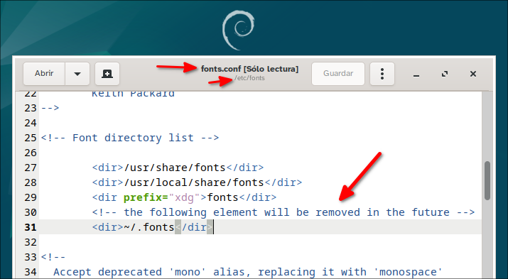

Este tutorial es para instalar fuentes gratuitas en Linux que sean una alternativa a las fuentes tipográficas privativas de microsoft, algunas de ellas se las puede encontrar en los repositorios de Linux o en Google Fonts y otros
La siguiente es una tabla donde están indicandos los usos típicos en documentos de fuentes tipográficas alternativas a las privativas de microsoft:
| Fuente de Windows | Alternativa de Software Libre | Uso Común en Documentos | Notas |
|---|---|---|---|
| Arial | Free Sans / Liberation Sans / Nimbus Sans / IBM plex Sans / Ubuntu Sans | Cuerpo de texto, títulos, subtítulos | Fuente sans-serif estándar y versátil. |
| Times New Roman | Free Serif / Liberation Serif / Nimbus Roman / IBM plex serif | Cuerpo de texto, informes formales, libros | Fuente serif clásica para documentos profesionales. |
| Courier New | FreeMono / Liberation Mono | Código, documentos técnicos, textos monoespaciados | Fuente monoespaciada usada en programación y tabulación. |
| Calibri | Carlito / Lato | Cuerpo de texto, presentaciones | Fuente moderna y legible. |
| Cambria | Caladea / Cambo | Cuerpo de texto, informes formales | Similar a Times New Roman, con mejor legibilidad en pantalla. |
| Comic Sans MS | Comic Neue | Usada en textos informales, educativos y presentaciones infantiles | Comic Neue es más refinada. |
| Verdana | DejaVu Sans | Cuerpo de texto, páginas web, interfaces gráficas | Excelente legibilidad en pantallas. |
| Georgia | Gelasio | Cuerpo de texto, títulos de documentos | Fuente serif con buena legibilidad en pantalla. |
| Trebuchet MS | Fira Sans | Títulos, subtítulos, presentaciones | Alternativa con un diseño limpio y moderno. |
| Impact | Anton / Oswald | Títulos llamativos | Anton es una alternativa con un impacto visual fuerte. |
| Tahoma | Signika | Cuerpo de texto en interfaces gráficas y documentos empresariales | Similar en espaciado y claridad. |
| Palatino Linotype | Source Serif 4 | Libros, ensayos, textos académicos | Basado en el diseño de Palatino. |
| Book Antiqua | P052 / C059 | Cuerpo de texto en documentos elegantes o clásicos | Alternativas clásicas con estilo refinado. |
| Franklin Gothic Book | Libre Franklin | Títulos, carteles, encabezados | Fuente sans-serif gruesa con estilo fuerte. |
| Century Gothic | URW Gothic | Títulos modernos, diseño gráfico | Diseño limpio y futurista. |
| Rockwell | Arvo | Títulos con impacto visual | Alternativas de estilo slab-serif. |
| Baskerville | Goudy Bookletter 1911 | Cuerpo de texto en documentos clásicos y elegantes | Fuente con excelente legibilidad impresa. |
| Consolas | JetBrains Mono / DejaVu Sans Mono / Fira Code / Hack / Iosevka / Victor Mono /Fragment Mono | Código de programación, terminales, documentos técnicos | Consolas es monoespaciada, sus alternativas tienen soporte para ligaduras de código. |
Instala las fuentes libres directamente desde los repositorios con este comando:
sudo apt install fonts-liberation fonts-freefont-ttf fonts-crosextra-carlito \
fonts-crosextra-caladea fonts-dejavu fonts-cantarell fonts-firacode \
fonts-jetbrains-mono fonts-ebgaramond fonts-ebgaramond-extra \
fonts-hack fonts-inconsolata fonts-uralic \
fonts-urw-base35 fonts-bpg-georgian fonts-comic-neue \
fonts-goudybookletter fonts-ibm-plexEntre las que se intalan, hay algunos paquetes que instalan varias fuentes con diferentes tipos y diferentes nombres:
fonts-liberation = Liberation Sans, Liberation
Serif
fonts-freefont-ttf = FreeMono
fonts-crosextra-carlito = carlito
fonts-crosextra-caladea = caladea
fonts-dejavu = DejaVu Sans, DejaVu Sans Mono
fonts-cantarell = Cantarell
fonts-ebgaramond = EB Garamond (08, 12)
fonts-ebgaramond-extra = EB Garamond SC (08, 12), EB
Garamond 12 All SC
fonts-ibm-plex = IBM Plex Sans, IBM plex Serif, IBM
plex Mono
fonts-hack = Hack
fonts-inconsolata = Inconsolata
fonts-urw-base35 = Nimbus Roman, Nimbus Sans, URW
Gothic, URW Bookman, C059, P052
fonts-comic-neue = Comic Neue
fonts-goudybookletter = Goudy Bookletter 1911
Algunas fuentes no están en los repositorios, están en este repositorio, pero puedes descargarlas manualmente desde Google Fonts:
Busca la fuente y descárgala (.zip con archivos
.ttf o .otf).
Slavo 27px → Alternativa a Rockwell
https://fonts.google.com/specimen/Slabo+27px
EB Garamond → Alternativa a Garamond
https://fonts.google.com/specimen/EB+Garamond
Libre Franklin → Alternativa a Franklin Gothic
https://fonts.google.com/specimen/Libre+Franklin
Oswald → Alternativa a Impact
https://fonts.google.com/specimen/Oswald
Anton → Alternativa a Impact
https://fonts.google.com/specimen/Anton
Arvo → Alternativa a Rockwell
https://fonts.google.com/specimen/Arvo
Source Serif 4 → Alternativa a Georgia
https://fonts.google.com/specimen/Source+Serif+4
Lato → Alternativa a Calibri
https://fonts.google.com/specimen/Lato
Cambo
https://fonts.google.com/specimen/Cambo
Fira Sans
https://fonts.google.com/specimen/Fira+Sans
Victor Mono → Alternativa a Consolas
https://fonts.google.com/specimen/Victor+Mono
Fragment Mono → Alternativa a Consolas
https://fonts.google.com/specimen/Fragment+Mono
Gelasio → Alternativa a Georgia
https://fonts.google.com/specimen/Gelasio
Signika
https://fonts.google.com/specimen/Signika
Iosevka → Alternativa a Consolas
https://github.com/be5invis/Iosevka/releases
El siguiente enlace es un ejemplo del archivo zip que contiene las
fuentes en .ttf:
https://github.com/be5invis/Iosevka/releases/download/v32.5.0/PkgTTF-Iosevka-32.5.0.zip
En muchas guías antiguas se recomienda copiar las fuentes de Windows
a la carpeta personal ~/.fonts.
Esto sigue siendo funcional en 2025, pero el archivo de
configuración de Fontconfig en Debian 12:
/etc/fonts/fonts.conf
indica claramente:
<dir prefix="xdg">fonts</dir>
<!-- the following element will be removed in the future -->
<dir>~/.fonts</dir>
Esto significa que ~/.fonts será removida en el
futuro, y la ubicación recomendada según el estándar
XDG Base Directory es:
~/.local/share/fontsPor lo tanto, si instalas fuentes solo para tu usuario, es mejor usar esa ruta recomendada para ya ir acostumbrandose
Si el equipo tiene varios usuarios y todos necesitan las fuentes de Windows, se deben instalar para todo el sistema.
Las fuentes del sistema en Linux se guardan en:
/usr/share/fonts/truetype/
Podemos crear una carpeta nueva, por ejemplo:
/usr/share/fonts/truetype/windows
y dentro de ella pegar todas las fuentes de Windows.
Para mover archivos a esa carpeta necesitamos permisos de administrador. Hay varias formas de hacerlo gráficamente:
1.) Instalar Krusader (si no lo tiene):
sudo apt install krusader2.) Ejecutar Krusader como superusuario:
sudo krusader3.) Navegar a la carpeta donde tienes las fuentes de Windows y
copiarlas. 4.)Abrir una pestaña con Ctrl + T e ir a
/usr/share/fonts/truetype/, crear la carpeta
windows y pegar allí las fuentes. (También puedes
hacerlo usando el otro panel en lugar de crear una pestaña).
1.) Instalar Double Commander:
sudo apt install doublecmd-gtko si usas KDE Plasma o LXQT:
sudo apt install doublecmd-qt2.) Ejecutar Double Commander con permisos de superusuario:
sudo doublecmd-gtko:
sudo doublecmd-qt3.) Copiar las fuentes a
/usr/share/fonts/truetype/windows.
Después de copiar las fuentes, se recomienda actualizar el caché de fuentes:
sudo fc-cache -fvfc-cache -fv?Cuando instalas una fuente en directorios estándar como:
~/.fonts (obsoleto pero aún funcional en muchos
sistemas)~/.local/share/fonts (recomendado para instalaciones
por usuario)/usr/share/fonts (para todo el sistema)el sistema detecta automáticamente los archivos .ttf,
.otf, etc. La mayoría de los entornos de escritorio
modernos y programas (como LibreOffice, GNOME, KDE, etc.) usan
fontconfig, que suele monitorear automáticamente
los cambios en esos directorios.
LibreOffice, al reiniciarse, vuelve a cargar las fuentes disponibles
a través de fontconfig, por eso ya te aparecen sin hacer
nada.
Durante mucho tiempo, el lugar “de facto” para instalar fuentes a nivel de usuario era:
~/.fonts (es decir, una carpeta .fonts en
tu directorio personal)Este método funcionaba bien y era el más documentado en distros como Debian, Ubuntu, etc., desde antes de 2010. Muchos tutoriales antiguos (y aún varios actuales 2025) siguen recomendando esta ruta.
A partir de las especificaciones de XDG (X Desktop Group), las distribuciones comenzaron a migrar a una estructura más estandarizada para los archivos de usuario. En esa estructura:
Los datos del usuario se almacenan en
~/.local/share/
Por tanto, las fuentes por usuario se instalan en:
~/.local/share/fontsEste cambio fue adoptado gradualmente, y
fontconfig desde versiones modernas (como la que
trae Debian 12) reconoce y monitorea automáticamente esa ruta
como válida para fuentes.
Si tienes una copia de Windows puedes entrar en la sesión de Windows y copiar las fuentes ubicadas en:
C:\Windows\Fonts
y pegarlas en un pendrive una carpeta creada con tal fin.
También si tienes Dual Boot o si usas un Pendrive con Linux portable
puedes Inicia sesión en Linux y Copia los archivos de fuentes
(.ttf) desde C:\Windows\Fonts
.fonts/windows_fonts
esto para el usuario actual
o
/usr/share/fonts/windows_fonts
para todos los usuarios, pero deberás hacer esto como superusuario
puedes hacerlo con tu administrador de archivos favorito como Thunar, Nemo, Nautilus, Dolphin, etc
Ignora los archivos .fon, ya que no
funcionarán, o borralos después.
Actualiza la caché de fuentes (opcional):
bash fc-cache -fv Actualizar la cache es opcional pues
los programas después de cerrarlos y abrirlos otra vez reconocerán las
fuentes nuevas.
La mayoría de las fuentes que has copiado desde Windows 10 funcionarán en Linux Debian, pero hay algunas consideraciones importantes según el formato de los archivos:
fontforge para
extraer las fuentes individuales y que funcionen.app850.fon,
coure.fon, modern.fon, roman.fon,
script.fon, smalle.fon,
sserife.fon, vga850.fon,
vgafix.fon, vgasys.fon)..fon (como app850.fon,
coure.fon, etc.) no son útiles en Linux.
Estas fuentes son específicas de Windows y no se renderizan
correctamente en entornos Linux modernos..ttc (como cambria.ttc,
mingliub.ttc, etc.) pueden requerir extracción de sus
componentes con herramientas como fontforge para usarlos
individualmente.gnome-font-viewer,
fontmatrix o font-manager para confirmar que
las fuentes se reconocen..ttc, instala
fontforge:
bash sudo apt install fontforge Luego ábrelo, carga el
.ttc y guárdalas como archivos .ttf
separados.Funcionarán: Todos los archivos
.ttf, .otf y algunos .ttc (con
herramientas).
No funcionarán: Los archivos
.fon
Recomendación: Elimina los archivos
.fon y usa las fuentes TTF/OTF restantes.
fc-cache -fvSi quieres ver, activar o desactivar fuentes fácilmente, instala Fontmatrix:
sudo apt install fontmatrixLuego ábrelo desde el menú y revisa tus fuentes instaladas.
Si las fuentes no se ven bien, debes configurar las fuentes visibles
Da clic en:
Edit > Preferences
Da clic en:
Display > Default font size
y pon ejemplo:
10
este número es un ejemplo y depende de cómo se vean las fuentes en tu monitor. Dda clic en Close y además cierra Fontmatrix y vuelvelo a abrir y se verá el cambio:
Linux Font Equivalents to Popular Web Typefaces | Jon
Christopher
https://jonchristopher.us/blog/linux-font-equivalents-to-popular-web-typefaces/
How do I install fonts?
how-do-i-install-fonts
Añadir una tipografía adicional para usuarios
individuales
fonts-user.html.es
Font configuration (Español)
Font_configuration_%28Español%29